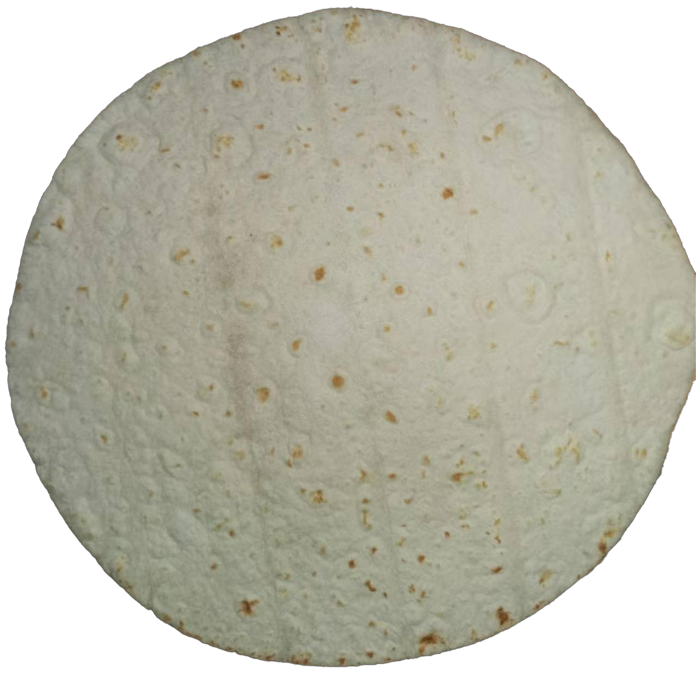

Food Example Images

Tortilla Production Line
JKXGB-820 / 930 Tortilla Automatic Production Line
A compact industrial tortilla line designed for stable output and easy operation. Suitable for medium-to-large factories, offering configurable diameter, throughput, and automation modules.
Control
PLC control
Operation
Human–machine interface
Workflow
Dividing → Proofing → Pressing → Baking
Output
Stable & continuous
Technical Parameters
| Applicable Diameter | 6"–12" (by mold/configuration) |
|---|---|
| Capacity | Up to 8,000 pcs/h (depending on size and configuration) |
| Line Modules | Dividing, proofing, pressing, baking, cooling, stacking (optional) |
| Control System | PLC + sensors; fault alarm & safety interlock |
| Heating | Oven system (gas/electric by configuration) |
| Application | Flour tortillas, wraps, similar flatbreads |
Process Flow
- Dough mixing & resting
- Dough dividing & ball forming
- Proofing (time adjustable)
- Pressing & forming
- Baking
- Cooling
- Stacking / counting (optional)
- Packaging connection (optional)
Options & Customization
- Configurable output capacity and product size
- Integration with cooling racks / stackers / counters
- Factory layout planning based on your workshop dimensions
- Oven type selection and energy optimization
Request a Quotation
Provide your tortilla diameter range, target pcs/h, and space constraints. We will recommend a suitable JKXGB-820/930 configuration.
Contact JIN KE MACHINERY